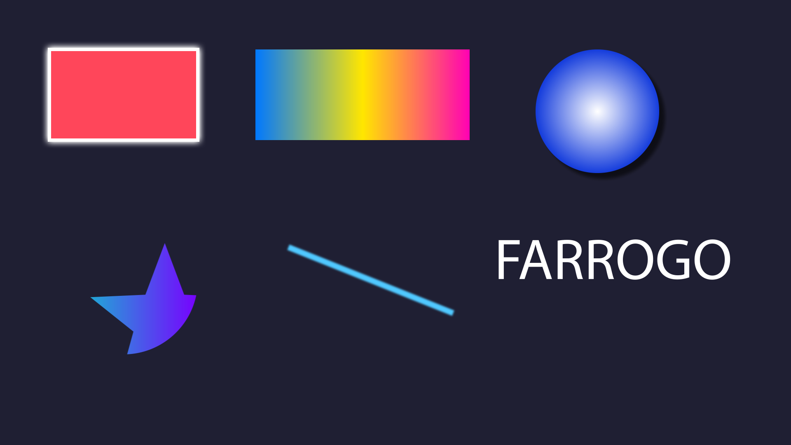
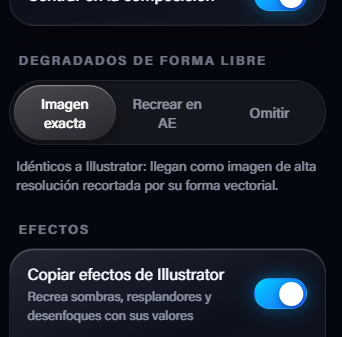

Formas nativas
Trazados, trazados compuestos, grupos y símbolos se convierten en shape layers. Anima cada punto.
Fargot Suite · Plugin para Illustrator y After Effects
Selecciona tu diseño, pulsa Enviar y aparece en After Effects como capas nativas: formas editables, degradados con sus colores exactos, textos que puedes reescribir y efectos recreados.
Windows 10/11 · Illustrator y After Effects 2019 o posterior


Nada de imágenes planas ni archivos .ai importados. Cada objeto es una capa de After Effects lista para animar.
Trazados, trazados compuestos, grupos y símbolos se convierten en shape layers. Anima cada punto.
Lineales y radiales como Gradient Fill nativo, con sus colores, puntos medios y transparencias. Se editan desde la propia forma.
Los textos llegan como capas de texto: misma fuente, tamaño, color e interlineado. Cambia lo que dice sin volver a Illustrator.
Sombras paralelas, resplandores y desenfoque gaussiano se rehacen con sus valores como efectos de After Effects.
Cada capa del tamaño de su objeto y en el mismo orden que en Illustrator. Las máscaras de recorte se respetan.
Activa "Recibir automáticamente" y lo que envías aparece solo en tu composición.
En Illustrator, elige los objetos que quieres llevar.
Pulsa Enviar a After Effects en el panel de Fargot Transfer.
En After Effects pulsa Recibir, o deja que llegue solo.
Precio de lanzamiento
Recibes tu clave de acceso por correo al instante.
Descarga el instalador, ábrelo y entra en la app Fargot con tu correo y tu clave. El plugin se instala solo en Illustrator y After Effects.
Si Windows muestra "Windows protegió su PC", pulsa Más información y luego Ejecutar de todas formas.

En dos a la vez. Si quieres usarlo en un tercero, cierra sesión en uno desde la app Fargot.
Para activar la licencia sí. Después funciona hasta 7 días sin conexión.
No. La app te avisa cuando hay una versión nueva y se actualiza con un clic.
Por ahora solo en Windows 10 y 11.
Puedes traerlos como imagen idéntica o recrearlos con efectos editables de After Effects.